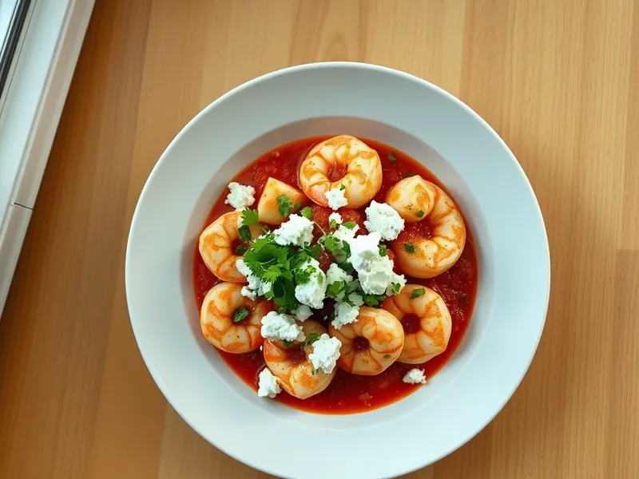

Креветки саганаки с фетой
Греческие креветки, запечённые в томатном соусе с брынзой
25 мин3 порц.319 ккал на порциюБ 33 · Ж 17 · У 10Средиземноморская кухня
Открыть в приложении: порции, таймеры, список покупок
Продукты на 3 порц.
- Креветки400 г
- Томаты в собственном соку1 шт
- Брынза / фета100 г
- Лук репчатый1 шт
- Чеснок2 зуб.
- Оливковое масло1 ст. л.
- Сушёные травы1 ч. л.
- Петрушка по желаниюпо вкусу
- Острый перец молотый по желанию1 щеп.
- Соль2 щеп.
Как готовить
- Разогрейте духовку до 200 °C (сильный жар). Очистите креветки.
- Обжарьте мелко нарезанный лук в оливковом масле на сковороде на среднем огне 3 минуты, добавьте чеснок и жарьте ещё минуту.
- Добавьте томаты в соку, разомните их лопаткой, положите сушёные травы и острый перец. Тушите на среднем огне 7 минут, пока соус не загустеет.
- Выложите креветки в соус, посыпьте раскрошенной брынзой и переставьте сковороду или форму в духовку.
- Запекайте при 200 °C (сильный жар) 7-8 минут, пока креветки не порозовеют, а сыр не размягчится. Посыпьте петрушкой.
Совет. Брынза солёная, поэтому соус солите только после пробы, уже вместе с сыром.